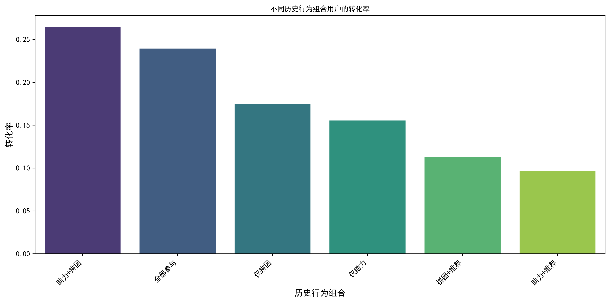
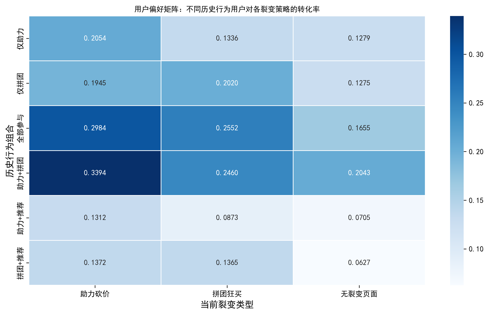
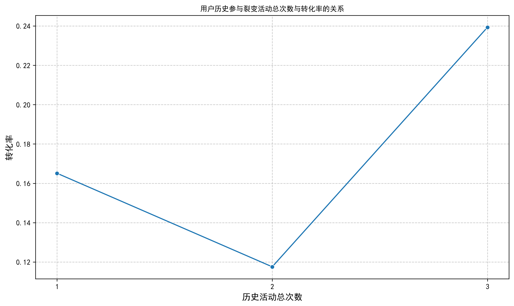
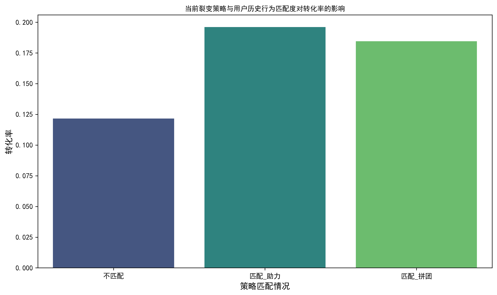

2. 核心发现
2.1 多种裂变行为的协同效应分析
核心发现：
- “助力+拼团”组合效果最佳：历史行为组合为“助力+拼团”的用户，其转化率最高，达到 26.49%。
- “全部参与”效果次之：同时参与过三种活动的用户，转化率也较高，为 23.93%。
- 单一行为效果递减：仅参与过“拼团”(17.48%) 或“助力”(15.55%) 的用户，转化率相对较低。
- “推荐”行为的特殊性：单独或与其它行为结合时（如“拼团+推荐”、“助力+推荐”），用户的转化率反而偏低。这可能表明“推荐”行为的用户本身转化意愿较低，或者该行为在当前设计下对转化的直接促进作用有限。

结论：“助力”和“拼团”两种裂变行为之间存在显著的正向协同效应，同时参与过这两种活动的用户表现出最强的购买意愿。
2.2 用户裂变策略偏好分析
核心发现 (偏好矩阵)：
- 通则：对于所有历史行为组合的用户，“助力砍价”和“拼团狂买”策略的转化率普遍高于“无裂变页面”。
- “仅助力”用户：
- 对“助力砍价”策略反应最好 (20.54%)。
- 对“拼团狂买”策略的反应 (13.36%) 也高于“无裂变页面” (12.79%)，表明他们对裂变活动本身有一定接受度。
- “仅拼团”用户：
- 对“拼团狂买”策略反应最好 (20.20%)。
- 对“助力砍价”策略的反应 (19.45%) 也非常接近，甚至略高于对“无裂变页面” (12.75%)。
- “全部参与”或“助力+拼团”用户：
- 这部分高价值用户对所有裂变策略的反应都非常积极。
- 在“助力砍价”策略下表现最佳（“全部参与”: 29.84%; “助力+拼团”: 33.94%）。
- “仅推荐”或“拼团+推荐”/“助力+推荐”用户：
- 对所有策略的反应都相对较弱，但仍优于“无裂变页面”。

结论：用户的策略偏好与其历史行为高度相关。曾参与过某类活动的用户，对该类活动对应的裂变策略表现出更高的接受度和转化率。这支持了“行为一致性”或“路径依赖”的现象。
2.3 裂变活动的累积/疲劳效应分析
核心发现 1: 历史活动总次数
- 非线性关系：用户历史参与裂变活动的总次数与转化率之间呈现非简单的线性关系。
- 参与过 1次 活动的用户转化率最高 (16.51%)。
- 参与过 2次 活动的用户转化率有所下降 (11.76%)。
- 参与过 3次 活动的用户（即“全部参与”）转化率回升至较高水平 (23.93%)。
- 解读：这可能表明，参与一次活动能有效激活用户，但参与两次可能让用户感到轻微疲劳或选择性变强。而参与全部三种活动的用户，可能代表了高度忠诚或高价值的用户群体，他们的转化意愿并未因多次参与而衰减。
核心发现 2: 策略匹配度
- 显著正向影响：当用户当前看到的裂变策略与其历史参与过的活动匹配时，转化率显著提升。
- 匹配“助力”：转化率高达 19.61%。
- 匹配“拼团”：转化率也达到 18.45%。
- 不匹配情况：策略不匹配时，转化率仅为 12.15%。


结论：
- 裂变活动的效果并非简单的“越多越好”，可能存在最优的参与次数。
- 策略匹配是提升转化率的关键。向用户展示与其历史行为相符的裂变策略，能最大化转化效果。这为个性化推荐和精准营销提供了强有力的依据。
3. 关键洞察与策略建议
洞察 1: 强化“助力+拼团”的组合策略
针对未参与过裂变活动的新用户，或仅参与过单一活动的用户，可以设计将“助力”和“拼团”结合的活动，以期利用其协同效应提升转化。
洞察 2: 实施个性化策略推荐
- 对于历史行为为“仅助力”的用户，优先推荐“助力砍价”策略。
- 对于历史行为为“仅拼团”的用户，优先推荐“拼团狂买”策略。
- 对于高价值用户（“全部参与”、“助力+拼团”），可以作为“通杀”策略（如“助力砍价”）的重点投放对象。
洞察 3: 警惕“推荐”活动的独立效果
当前“推荐”活动可能未能有效转化为购买行为，建议重新审视其设计和激励机制。
洞察 4: 优化活动频率和轮换
鉴于参与2次活动后转化率下降的现象，应避免对同一用户重复、密集地推送相同类型的裂变活动，而应根据用户历史行为进行策略轮换和组合。
洞察 5: 利用策略匹配提升效果
在用户触达环节，应优先匹配其历史行为，推送相应的裂变策略，以最大化单次触达的转化效率。